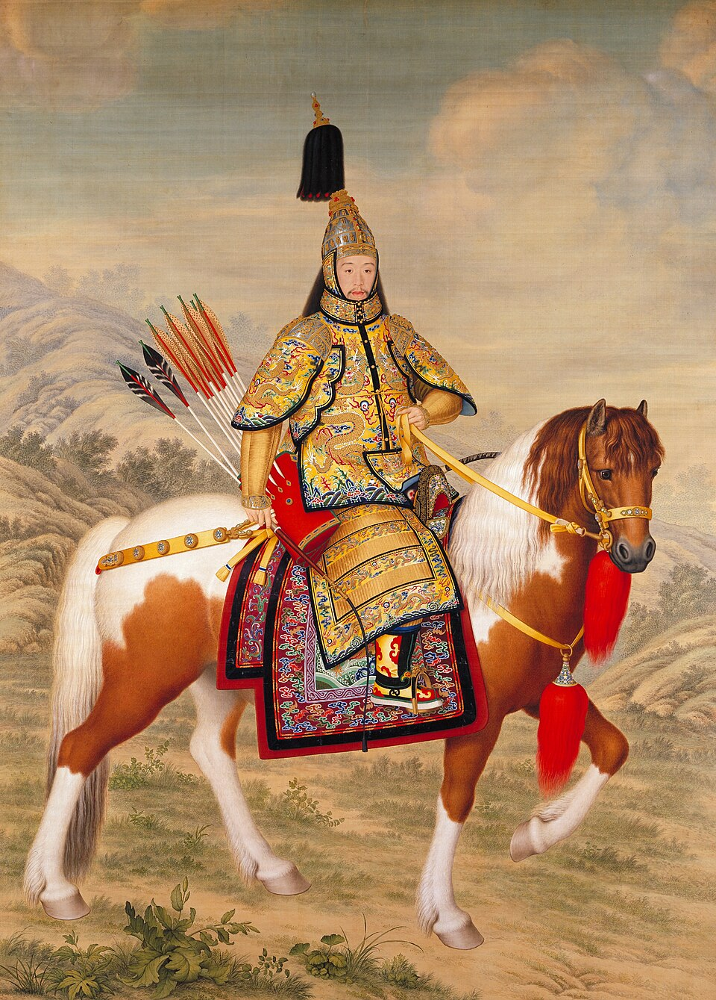
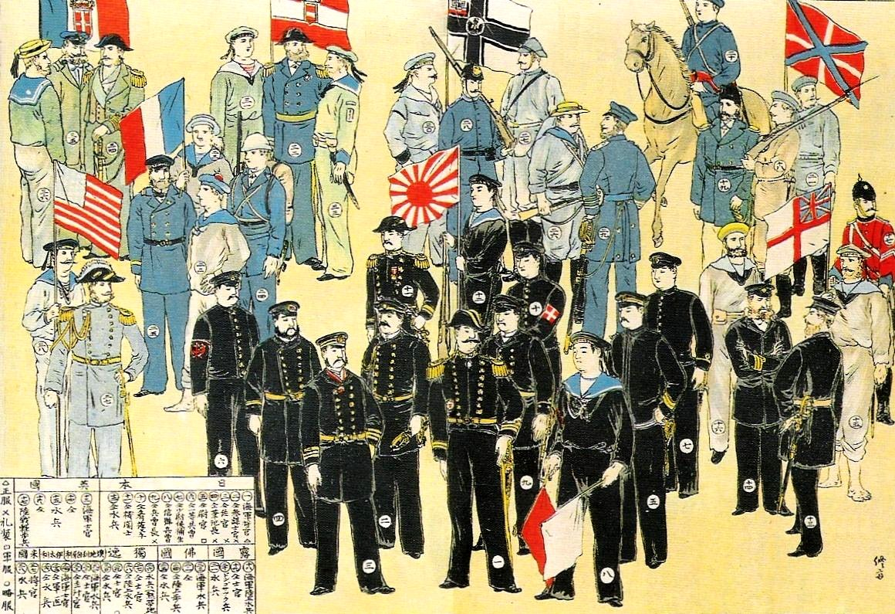
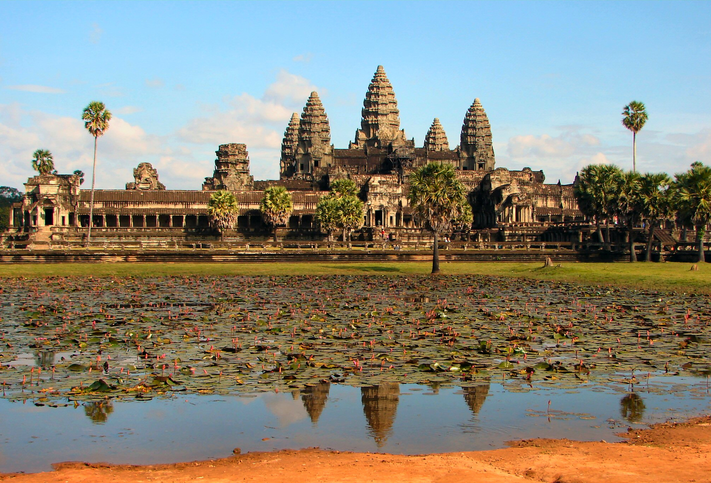

1. Η Αυτάρεσκη «Μέση Αυτοκρατορία» & η Σύγκρουση με τη Δύση
Στο 16ο μάθημα της σειράς, η καθηγήτρια Μαρία Ευθυμίου ολοκληρώνει τον κύκλο της Άπω Ανατολής αναλύοντας τη δραματική κατάρρευση της αυτοκρατορικής Κίνας κατά τον 19ο αιώνα, καθώς και το γοητευτικό πολιτισμικό ψηφιδωτό της Νοτιοανατολικής Ασίας (Ινδοκίνα, Ινδονησία, Φιλιππίνες).
Επί χιλιετίες, η Κίνα αντιλαμβανόταν τον εαυτό της ως το αδιαμφισβήτητο κέντρο της οικουμένης: Τζονγκουό (Zhongguo = «Το Μέσον Κράτος»). Ο Αυτοκράτορας ήταν ο «Υιός του Ουρανού» (Tianzi), κυβερνήτης «όλων όσων βρίσκονται κάτω από τον ουρανό» (Tianxia). Όλοι οι υπόλοιποι λαοί —συμπεριλαμβανομένων των Ευρωπαίων— θεωρούνταν απλώς «βάρβαροι» (Yi), υποχρεωμένοι να προσφέρουν φόρο υποτέλειας και να γονυπετούν ταπεινά (Kowtow) μπροστά στον αυτοκρατορικό θρόνο.

Από τα μέσα του 18ου αιώνα, η δυναστεία των Τσινγκ (Qing, 1644–1912) περιόρισε αυστηρά όλο το δυτικό εμπόριο σε ένα και μοναδικό λιμάνι: την Καντόνα (Γκουανγκτζόου). Οι Ευρωπαίοι έμποροι δεν είχαν δικαίωμα να εισέλθουν στην ενδοχώρα, να φέρουν όπλα, ούτε καν να μάθουν κινεζικά επί ποινή θανάτου για τους ντόπιους δασκάλους!
«Η επιστολή του αυτοκράτορα Τσιανλόνγκ προς τον βασιλιά της Αγγλίας το 1793 είναι μνημείο πολιτισμικής αυταρέσκειας! Τους έγραψε: "Η Αυτοκρατορία μας διαθέτει τα πάντα σε απόλυτη αφθονία και δεν έχουμε ανάγκη από κανένα από τα προϊόντα των βαρβάρων της χώρας σας!". Η Κίνα αντιπροσώπευε τότε σχεδόν το 33% του παγκόσμιου ΑΕΠ! Αλλά δεν είχε καταλάβει ότι στον Ατλαντικό είχε ήδη συντελεστεί η Επιστημονική και η Βιομηχανική Επανάσταση. Οι "βάρβαροι των θαλασσών" δεν έρχονταν πλέον με ξύλινα ιστιοφόρα, αλλά με ατμόπλοια και κανόνια που μπορούσαν να ισοπεδώσουν τις ακτές της σε λίγες ώρες!»
2. Οι Πόλεμοι του Οπίου & ο «Αιώνας της Ταπείνωσης»
Στις αρχές του 19ου αιώνα, η Βρετανική Αυτοκρατορία αντιμετώπιζε ένα ανησυχητικό εμπορικό έλλειμμα: οι Βρετανοί είχαν πάθος με το κινεζικό τσάι, το μετάξι και την πορσελάνη, αλλά η αυτάρκης Κίνα δεν αγόραζε τίποτα δυτικό —απαιτούσε πληρωμή αποκλειστικά σε καθαρό ασήμι.
Η Βρετανική Εταιρεία Ανατολικών Ινδιών βρήκε μια αδίστακτη λύση: την καλλιέργεια οπίου στις εύφορες φυτείες της Βεγγάλης στην Ινδία και την παράνομη διακίνησή του στην Κίνα μέσω διεφθαρμένων αξιωματούχων. Μέσα σε λίγες δεκαετίες, εκατομμύρια Κινέζοι κάθε τάξης εθίστηκαν στο ναρκωτικό, και η ροή του ασημιού αντιστράφηκε βίαια: τώρα το ασήμι έφευγε από την Κίνα προς το Λονδίνο.

Όταν ο αδιάφθορος επίτροπος Λιν Ζεξού (Lin Zexu) κατέσχεσε και κατέστρεψε 20.000 κιβώτια οπίου στην Καντόνα το 1839, η Βρετανία κήρυξε τον Πρώτο Πόλεμο του Οπίου (1839–1842) στο όνομα του «ελεύθερου εμπορίου». Με τη Συνθήκη του Νανκίνγκ (1842), η Κίνα υπέστη την πρώτη της ιστορική συντριβή:
- Παραχώρηση της νήσου Χονγκ Κονγκ στη Βρετανία.
- Άνοιγμα πέντε μεγάλων λιμανιών («Treaty Ports») για τους Βρετανούς εμπόρους.
- Κολοσσιαία αποζημίωση 21 εκατομμυρίων δολαρίων.
- Ετεροδικία (Extraterritoriality): Οι Δυτικοί υπήκοοι εξαιρούνταν από την κινεζική νομοθεσία και δικαιοσύνη.
Το 1860, κατά τον Δεύτερο Πόλεμο του Οπίου, τα βρετανικά και γαλλικά στρατεύματα κατέστρεψαν ολοσχερώς το Παλαιό Θερινό Ανάκτορο (Yuanmingyuan) στο Πεκίνο —ένα συγκρότημα παλατιών και κήπων πέντε φορές μεγαλύτερο από τις Βερσαλλίες. Η φωτιά έκαιγε ασταμάτητα για τρεις ολόκληρες ημέρες, και χιλιάδες ανεκτίμητοι θησαυροί μεταφέρθηκαν στα μουσεία του Λονδίνου και του Παρισιού.
3. Η Εξέγερση των Ταϊπίνγκ (1850–1864): 20–30 Εκατομμύρια Νεκροί!
Ενώ οι ξένες δυνάμεις πίεζαν την Κίνα απ' έξω, το εσωτερικό της εξερράγη στην πιο αιματηρή εμφύλια σύγκρουση στην ιστορία της ανθρωπότητας. Όπως σχολιάζει η Μαρία Ευθυμίου με αυθόρμητο χιούμορ στην αίθουσα: «Παιδιά, κόψτε κάτι! Εδώ χάνεται η Κίνα από τις ξένες κανονιοφόρους, κι εκείνη ακριβώς την ώρα ξεσπά ένας δεκατετραετής εμφύλιος με 20–30 εκατομμύρια νεκρούς επειδή ένας αποτυχημένος υποψήφιος δημόσιος υπάλληλος νόμιζε ότι ήταν ο μικρότερος αδελφός του Χριστού!».
Ο ηγέτης της εξέγερσης, Χονγκ Σιουτσιουάν (Hong Xiuquan), ένας αποτυχημένος υποψήφιος των εξετάσεων για τους μανδαρίνους, οραματίστηκε ότι ήταν... ο μικρότερος αδελφός του Ιησού Χριστού, σταλμένος από τον Θεό για να απαλλάξει την Κίνα από τους δαίμονες Μαντσού!
«Ακούστε αριθμούς για να καταλάβετε το μέγεθος της Κίνας: Στην Εξέγερση των Ταϊπίνγκ χάθηκαν είκοσι με τριάντα εκατομμύρια άνθρωποι! Περισσότεροι από όσους έχασε ολόκληρη η Ευρώπη στον Α΄ Παγκόσμιο Πόλεμο! Πόλεις εκατομμυρίων ισοπεδώθηκαν, επαρχίες ολόκληρες ερημώθηκαν. Και αυτό συνέβη επειδή ένας αποτυχημένος υποψήφιος δημόσιος υπάλληλος νόμιζε ότι ήταν ο αδελφός του Χριστού και αποφάσισε να εξαγνίσει την Κίνα από τους "δαίμονες"!»
Το «Ουράνιο Βασίλειο της Μεγάλης Ειρήνης» (Taiping Tianguo) εφάρμοσε έναν ακραίο εξισωτισμό: κατάργησε την ατομική ιδιοκτησία, επέβαλε κοινοκτημοσύνη, απαγόρευσε το όπιο και το δέσιμο των ποδιών των γυναικών, και τοποθέτησε γυναίκες σε στρατιωτικές μονάδες. Χρειάστηκαν 14 χρόνια ανηλεούς πολέμου και η βοήθεια ξένων μισθοφόρων για να συντριβεί η εξέγερση.
4. Οι Μπόξερ & η Πτώση της Αυτοκρατορίας (1911)
Στα τέλη του αιώνα, η μυστική οργάνωση των «Δικαίων και Αρμονικών Γροθιών» (Μπόξερ) εξεγέρθηκε με την πεποίθηση ότι οι πολεμικές τέχνες και τα φυλαχτά τους τούς καθιστούσαν άτρωτους στις σφαίρες των Ευρωπαίων.

Λίγα χρόνια νωρίτερα, ο Α΄ Σινο-Ιαπωνικός Πόλεμος (1894–1895) (βλ. αναλυτικά στο Κεφάλαιο 15) είχε καταφέρει το πρώτο συντριπτικό πλήγμα, αποσπώντας την Ταϊβάν και τα νησιά Ριούκιου και επισφραγίζοντας την αδυναμία της δυναστείας. Η πολιορκία των ξένων πρεσβειών στο Πεκίνο οδήγησε στην εισβολή της Συμμαχίας των Οκτώ Εθνών και σε νέα ταπεινωτική συντριβή. Παράλληλα, στον Ρωσοϊαπωνικό Πόλεμο (1904–1905) στη Μαντζουρία (βλ. αναλυτικά στο Κεφάλαιο 15), ο ρωσικός στόλος της Βαλτικής έκανε τον γύρο της Αφρικής επί οκτώ μήνες μόνο για να βυθιστεί σε λίγες ώρες στην Τσουσίμα, ενώ ο Υπερσιβηρικός εγκαινιάστηκε μεταφέροντας εκατοντάδες χιλιάδες πτώματα Ρώσων στρατιωτών. Το 1911, η Επανάσταση Σινχάι υπό τον γιατρό Σουν Γιατ-σεν ανέτρεψε τη δυναστεία. Ο τελευταίος αυτοκράτορας, ο εξάχρονος Που Γι, παραιτήθηκε το 1912: η κινεζική αυτοκρατορία των 2.133 ετών έφτασε στο οριστικό της τέλος.
Από τον Μάο στον Ντενγκ Σιαοπίνγκ: Τα Χυτήρια της Αυλής & το «Εργοστάσιο του Πλανήτη»
Η πτώση της αυτοκρατορίας το 1912 δεν έφερε άμεση γαλήνη. Η Κίνα βυθίστηκε στην περίοδο των Τοπικών Πολεμάρχων (Warlords), στη σκληρή σύγκρουση μεταξύ των Εθνικιστών του Τσανγκ Κάι-σεκ (Kuomintang) και των Κομμουνιστών του Μάο Τσετούνγκ (Mao Zedong), και στην κτηνώδη ιαπωνική εισβολή του 1937:
- Ο Μεγάλος Πόλεμος & οι Ατομικές Βόμβες: Η ιαπωνική κατοχή συνοδεύτηκε από ανείπωτες θηριωδίες (όπως η διαβόητη Σφαγή του Νανκίνγκ το 1937 με 300.000 θύματα). Η λύτρωση ήρθε μόνο με το τέλος του Β΄ Παγκοσμίου Πολέμου στον Ειρηνικό, όταν οι ατομικές βόμβες στη Χιροσίμα και το Ναγκασάκι (Αύγουστος 1945) ανάγκασαν τον αυτοκράτορα Χιροχίτο να εκφωνήσει το πρώτο ραδιοφωνικό διάγγελμα στην ιστορία της Ιαπωνίας (Gyokuon-hoso), ανακοινώνοντας τη συνθηκολόγηση.
- Η Ίδρυση της Λαϊκής Δημοκρατίας (1949): Μετά την ήττα της Ιαπωνίας, ο κινεζικός εμφύλιος συνεχίστηκε μέχρι την τελική επικράτηση των κομμουνιστών. Ο Μάο ανακήρυξε τη Λαϊκή Δημοκρατία στην Πλατεία Τιενανμέν (1 Οκτωβρίου 1949), ενώ ο Τσανγκ Κάι-σεκ διέφυγε στην Ταϊβάν.
- Το «Μεγάλο Άλμα προς τα Εμπρός» (1958) & τα Χυτήρια στις Αυλές: Όπως περιγράφει με γλαφυρότητα η Μαρία Ευθυμίου, ο Μάο αποφάσισε να εκβιομηχανίσει την Κίνα όχι με παραδοσιακές βιομηχανικές ζώνες, αλλά μετατρέποντας κάθε χωριό σε μεταλλουργικό κέντρο: «Σε κάθε αυλή σπιτιού και σε κάθε κολεκτίβα έστησαν αυτοσχέδια καμίνια (backyard furnaces)! Οι αγρότες έλιωναν τις κατσαρόλες, τα τηγάνια και τα κουτάλια τους νομίζοντας ότι φτιάχνουν ατσάλι πρώτης ποιότητας, παρατώντας ταυτόχρονα τα χωράφια τους! Το αποτέλεσμα ήταν ένα εντελώς άχρηστο, σαθρό μέταλλο και ένας κολοσσιαίος λιμός που κόστισε τη ζωή σε σχεδόν τριάντα εκατομμύρια ανθρώπους!».
- Ο Πραγματισμός του Ντενγκ Σιαοπίνγκ: Μετά τον θάνατο του Μάο το 1976, ο νέος ηγέτης Ντενγκ Σιαοπίνγκ (Deng Xiaoping) πραγματοποίησε μια θεαματική οικονομική στροφή 180 μοιρών: υιοθέτησε τον «σοσιαλισμό της αγοράς», άνοιξε τις Ειδικές Οικονομικές Ζώνες (όπως η Σεντζέν) στις ξένες επενδύσεις και διατύπωσε την περίφημη ρεαλιστική αρχή: «Δεν έχει καμία σημασία αν η γάτα είναι μαύρη ή άσπρη, αρκεί να πιάνει ποντίκια!». Μέσα σε τέσσερις δεκαετίες, το άλλοτε απομονωμένο κράτος αντικατέστησε το «Made in Taiwan» με το «Made in China», μετατρεπόμενο στο αδιαμφισβήτητο βιομηχανικό εργαστήρι ολόκληρης της υφηλίου.
5. Νοτιοανατολική Ασία: Το Πολιτισμικό Σταυροδρόμι Ινδίας & Κίνας
Στο δεύτερο μέρος του μαθήματος, η καθηγήτρια στρέφει το βλέμμα στο συναρπαστικό μωσαϊκό της Νοτιοανατολικής Ασίας —μια περιοχή που ιστορικά ονομάστηκε «Ινδοκίνα», ακριβώς επειδή σμιλεύτηκε από τη συνάντηση των δύο γιγάντων της Ασίας.
1. Το Βιετνάμ: Η Μοναδική Σινική Χώρα της ΝΑ Ασίας
Ενώ ολόκληρη η υπόλοιπη Νοτιοανατολική Ασία επηρεάστηκε βαθιά από τον ινδικό πολιτισμό, το Βιετνάμ αποτελεί τη λαμπρή εξαίρεση:
- Υπήρξε υπό άμεση κινεζική κατοχή για πάνω από 1.000 χρόνια (111 π.Χ. – 938 μ.Χ.).
- Υιοθέτησε τον Κομφουκιανισμό, το σύστημα των μανδαρίνων, τη γραφειοκρατία και την κινεζική γραφή.
- Ταυτόχρονα όμως, διατήρησε μια αδάμαστη εθνική συνείδηση. Οι Βιετναμέζοι εξεγείρονταν διαρκώς κατά των Κινέζων (όπως η περίφημη επανάσταση των αδελφών Τρουνγκ το 40 μ.Χ., που πολεμούσαν πάνω σε πολεμικούς ελέφαντες!).
2. Καμπότζη & το Θαύμα του Άνγκορ Βατ (Angkor Wat)
Η Αυτοκρατορία των Χμερ (Khmer) στην Καμπότζη δημιούργησε μεταξύ 9ου και 15ου αιώνα έναν από τους πιο λαμπρούς υδραυλικούς πολιτισμούς του πλανήτη.

Στην καρδιά της ζούγκλας, ο βασιλιάς Σουριαβαρμάν Β΄ έχτισε τον 12ο αιώνα το Άνγκορ Βατ (Angkor Wat) —το μεγαλύτερο μονολιθικό θρησκευτικό οικοδόμημα στην ιστορία της ανθρωπότητας! Αρχικά αφιερωμένο στον ινδουιστικό θεό Βισνού ως επίγειο αντίγραφο του ιερού όρους Μερού, μετατράπηκε αργότερα σε βουδιστικό ιερό. Οι Χμερ ανέπτυξαν ένα ασύλληπτο δίκτυο τεχνητών λιμνών (Barays) και καναλιών που επέτρεπε τρεις έως τέσσερις σοδειές ρυζιού ετησίως, συντηρώντας έναν πληθυσμό σχεδόν ενός εκατομμυρίου κατοίκων —όταν το Λονδίνο και το Παρίσι ήταν μικρές λασπωμένες κωμοπόλεις 30.000 κατοίκων!
Η Καμπότζη & οι Μνήμες της Μεταπολίτευσης: Στον 20ό αιώνα, η Καμπότζη γνώρισε τη φρίκη των Ερυθρών Χμερ του Πολ Ποτ. Η Μαρία Ευθυμίου θυμάται με αυτοσαρκασμό τα φοιτητικά της χρόνια στην Αθήνα της Μεταπολίτευσης (1974): «Όταν μπήκα στο πανεπιστήμιο ήμασταν όλοι σε κομμουνιστικές οργανώσεις, έτοιμοι να πάρουμε τα Χειμερινά Ανάκτορα σε λίγες μέρες! Χωρισμένοι σε άπειρες παρατάξεις: φιλοσοβιετικοί, μαοϊκοί, τροτσκιστές, οπαδοί του Εμβέρ Χότζα, μέχρι και υποστηρικτές των Ερυθρών Χμερ της Καμπότζης —όλοι έτοιμοι για τη μεγάλη ανατροπή!».
3. Το Βασίλειο του Σιάμ (Ταϊλάνδη): Η Μόνη Χώρα που δεν Αποικιοποιήθηκε
Στη διάρκεια του 19ου αιώνα, όταν η Βρετανία κατέλαβε τη Βιρμανία και τη Μαλαισία, και η Γαλλία κατέκτησε το Βιετνάμ, το Λάος και την Καμπότζη (Γαλλική Ινδοκίνα), το Βασίλειο του Σιάμ (η σημερινή Ταϊλάνδη) κατόρθωσε το ακατόρθωτο: υπό την ιδιοφυή διπλωματία των βασιλιάδων Μόνγκουτ (Ράμα Δ΄) και Τσουλαλονγκόρν (Ράμα Ε΄), το Σιάμ εκσυγχρονίστηκε ταχύτατα στα δυτικά πρότυπα και αυτοπροτάθηκε ως ουδέτερη ενδιάμεση ζώνη (buffer state) ανάμεσα στη βρετανική και τη γαλλική αυτοκρατορία. Έτσι, η Ταϊλάνδη παρέμεινε η μοναδική χώρα σε ολόκληρη τη Νοτιοανατολική Ασία που δεν έγινε ποτέ ευρωπαϊκή αποικία!
4. Ινδονησία: Το Αρχιπέλαγος των Μπαχαρικών & η Εξάπλωση του Ισλάμ
Η σημερινή Ινδονησία —το μεγαλύτερο νησιωτικό κράτος στον πλανήτη με πάνω από 17.000 νησιά— γνώρισε τρία διαδοχικά πολιτισμικά κύματα:
- Ινδουιστικό-Βουδιστικό παρελθόν: Οι θαλασσοκρατορίες Σριβιτζάγια (Σουμάτρα) και Ματζαπαχίτ (Ιάβα) άφησαν αριστουργήματα όπως ο τεράστιος βουδιστικός ναός Μπορομπουντούρ (Borobudur) και ο ινδουιστικός ναός Πραμπανάν.
- Ο Εξισλαμισμός μέσω του Εμπορίου: Από τον 13ο αιώνα, μουσουλμάνοι έμποροι από την Ινδία (Γκουτζαράτ) και την Αραβία μετέφεραν το Ισλάμ στα λιμάνια της Μάλακκα και της Ιάβας. Το Ισλάμ ρίζωσε ειρηνικά, μπολιασμένο με μυστικιστικά σουφικά και τοπικά ανιμιστικά στοιχεία, κάνοντας σήμερα την Ινδονησία τη πολυπληθέστερη μουσουλμανική χώρα στον κόσμο!
- Ολλανδική Αποικιοκρατία: Τα «Νησιά των Μπαχαρικών» (Μολούκες) έγιναν το επίκεντρο του παγκόσμιου αγώνα για το μοσχοκάρυδο, το γαρίφαλο και το πιπέρι. Η Ολλανδική Εταιρεία Ανατολικών Ινδιών (VOC) επέβαλε ένα αδίστακτο μονοπώλιο για σχεδόν 350 χρόνια.
5. Το Βιετνάμ & ο Αντιαποικιακός Αγώνας: Χο Τσι Μινχ & Ντιεν Μπιεν Φου (1954)
Στον 20ό αιώνα, η αδάμαστη βιετναμέζικη αντοχή συγκρούστηκε μετωπικά με τη δυτική αποικιοκρατία:
- Ο ηγέτης Χο Τσι Μινχ (Ho Chi Minh = «αυτός που φέρνει το φως») ίδρυσε το κίνημα των Βιετμίν (Viet Minh) συνδυάζοντας τον κομμουνισμό με τον εθνικοαπελευθερωτικό αγώνα.
- Η Μάχη του Ντιεν Μπιεν Φου (1954): Οι Βιετναμέζοι πέτυχαν ένα απίστευτο στρατιωτικό κατόρθωμα: αποσυναρμολόγησαν βαριά πυροβόλα, τα ανέβασαν με τα χέρια και με ποδήλατα μέσα από απάτητες ζούγκλες στην κορυφή των βουνών, και πολιόρκησαν την επίλεκτη γαλλική φρουρά στην κοιλάδα, συντρίβοντας οριστικά τη γαλλική αποικιοκρατία στην Ινδοκίνα!
- Η συμφωνία της Γενεύης (1954) χώρισε τη χώρα στον 17ο Παράλληλο (Βόρειο και Νότιο Βιετνάμ), ανοίγοντας τον δρόμο για τον μακροχρόνιο και οδυνηρό Πόλεμο του Βιετνάμ (1955–1975) απέναντι στις Ηνωμένες Πολιτείες.
6. Η Κορεατική Χερσόνησος: «Μια Γαρίδα ανάμεσα σε Δύο Φάλαινες» & ο Πόλεμος του 1950–1953
Η ιστορία της Κορέας («Η Χώρα της Πρωινής Γαλήνης», βασίλειο Τζοσόν) υπήρξε ένα διαρκές δράμα γεωπολιτικής πίεσης ανάμεσα στους δύο γίγαντες της περιοχής —την Κίνα και την Ιαπωνία. Οι ίδιοι οι Κορεάτες συνήθιζαν να λένε αυτοσαρκαστικά: «Είμαστε μια γαρίδα που της σπάνε τη ράχη όταν μαλώνουν δύο φάλαινες!».
- Η Σκληρή Ιαπωνική Κατοχή (1910–1945): Η Ιαπωνία προσπάθησε να εξαλείψει πλήρως την κορεατική ταυτότητα: απαγόρευσε την κορεατική γλώσσα, υποχρέωσε τους πολίτες να πάρουν ιαπωνικά ονόματα και στρατολόγησε εκατοντάδες χιλιάδες εργάτες και γυναίκες («γυναίκες ανακούφισης»).
- Ο Πόλεμος της Κορέας (1950–1953): Μετά το τέλος του Β΄ Παγκοσμίου Πολέμου, η Κορέα διαιρέθηκε στον 38ο Παράλληλο ανάμεσα στη σοβιετική ζώνη (Βορράς υπό τον Κιμ Ιλ Σουνγκ) και την αμερικανική ζώνη (Νότος υπό τον Σίνγκμαν Ρι).
- Τον Ιούνιο του 1950, η Βόρεια Κορέα εισέβαλε στον Νότο. Η σύγκρουση μετατράπηκε στον πρώτο θερμό πόλεμο του Ψυχρού Πολέμου, με την ανάμειξη των ΗΠΑ (υπό τη σημαία του ΟΗΕ) και εκατοντάδων χιλιάδων «εθελοντών» στρατιωτών της κομμουνιστικής Κίνας του Μάο Τσετούνγκ.
- Μετά από τρία χρόνια αιματηρών μαχών και τρία εκατομμύρια νεκρούς, ο πόλεμος έληξε με ανακωχή (όχι συνθήκη ειρήνης!) το 1953, διατηρώντας μέχρι σήμερα την πιο βαριά οπλισμένη αποστρατιωτικοποιημένη ζώνη (DMZ) στον πλανήτη.
«Κοιτάξτε το Βιετνάμ και την Κορέα! Είναι δύο μικροί λαοί σε μέγεθος μπροστά στο τέρας της Κίνας. Κι όμως, άντεξαν χιλιετίες πίεσης, αφομοίωσαν τον κινεζικό πολιτισμό χωρίς να χάσουν το εθνικό τους πείσμα, και στον 20ό αιώνα τα έβαλαν με τις μεγαλύτερες υπερδυνάμεις της Γης: με τη Γαλλία, με την Αμερική, με την Κίνα! Αυτή η απίστευτη αντοχή του ασιατικού ψυχισμού είναι ένα από τα πιο συγκλονιστικά μαθήματα της παγκόσμιας ιστορίας!»
Το Στενό της Μάλακκα & η Γεωπολιτική της Θάλασσας
Στην καρδιά του ναυτικού χάρτη της Νοτιοανατολικής Ασίας δεσπόζει το Στενό της Μάλακκα (Strait of Malacca) —ένας στενός θαλάσσιος διάδρομος μήκους 800 χιλιομέτρων ανάμεσα στη Μαλαισία και τη Σουμάτρα. Από την αρχαιότητα μέχρι σήμερα, το στενό αυτό αποτελεί την πιο πολυσύχναστη θαλάσσια αρτηρία του πλανήτη: από εκεί διέρχεται το ένα τέταρτο του παγκόσμιου εμπορίου και σχεδόν όλο το πετρέλαιο που τροφοδοτεί την Κίνα, την Ιαπωνία και την Κορέα. Όποιος ελέγχει τη Μάλακκα και τη Σιγκαπούρη, κρατά στα χέρια του την ανάσα της παγκόσμιας ναυτιλίας!
6. Συγκριτικός Πίνακας: Κίνα, Κορέα & Νοτιοανατολική Ασία
| Περιοχή | Θρησκεία / Πίστη | Πολιτισμική Επιρροή | Κομβικό Γεγονός |
|---|---|---|---|
| Κίνα | Κομφουκιανισμός, Ταοϊσμός | Αυτόχθων Σινική | Πόλεμοι Οπίου (1839), Πτώση Τσινγκ (1911) |
| Κορέα | Κομφουκιανισμός, Βουδισμός, Χριστιανισμός | Σινική (Κινεζική) | Ιαπωνική κατοχή, Πόλεμος Κορέας (1950–53) |
| Βιετνάμ | Μαχαγιάνα Βουδισμός, Κομφουκιανισμός | Κινεζική | Μάχη Ντιεν Μπιεν Φου (1954), Χο Τσι Μινχ |
| Καμπότζη | Ινδουισμός → Βουδισμός | Ινδική (Χμερ) | Άνγκορ Βατ (12ος αι., Σουριαβαρμάν Β΄) |
| Ταϊλάνδη (Σιάμ) | Θεραβάντα Βουδισμός | Ινδική | Ανεξάρτητη ουδέτερη ζώνη (Buffer state) |
| Ινδονησία | Ισλάμ (προηγ. Ινδουισμός/Βουδισμός) | Ινδική → Ισλαμική | Μπορομπουντούρ, Ολλανδική VOC |